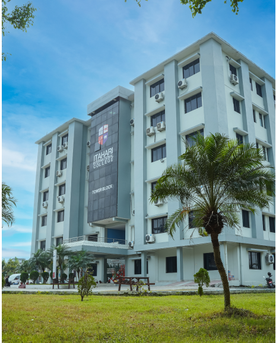
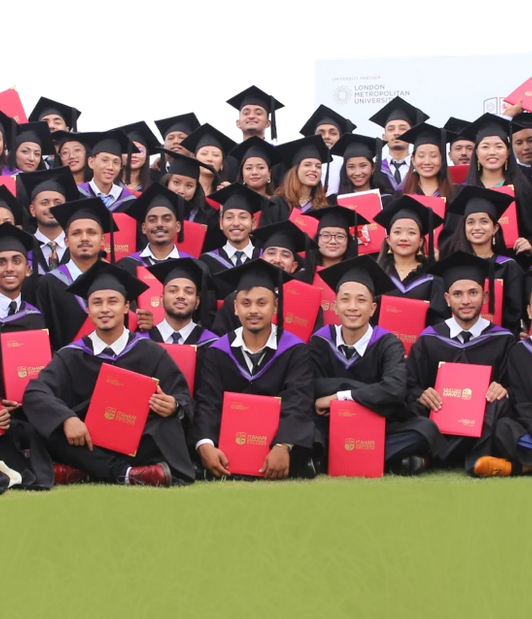

Since 2017, Itahari International College has offered top-tier IT and Busssiness programmes in partnership with London Metropolitan University, UK.
Welcome to Itahari International College
Since 2017, Itahari International College has offered top-tier IT and Busssiness programmes in partnership with London Metropolitan University, UK. We aims to produce globally compective graduates, making it the first college in Itahari to provide a direct UK university degree.
 Our Vision
We aims to produce globally compective graduates, making it the first college in Itahari to provide a direct UK university degree. IIC aims to nurtures future leaders and innovators by providing hands-on experiences, real world projects, and a practical curriculum.
Our Mission
Transforming LIves Through Innovation & Education with ingenuity at the forefront of all our decisions, we strive to become a contributive factor in the betterment of Nepal and society in general by providing practical career centric educaton and innovations in technology.